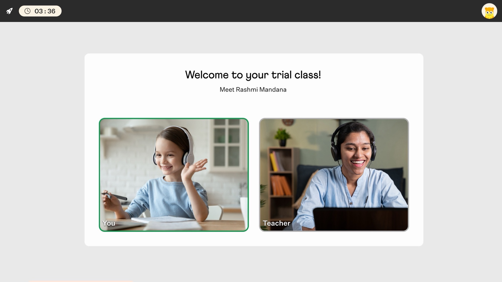
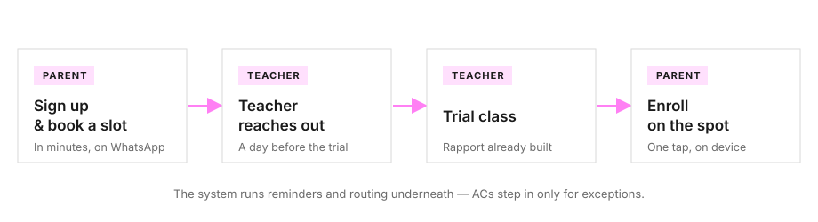
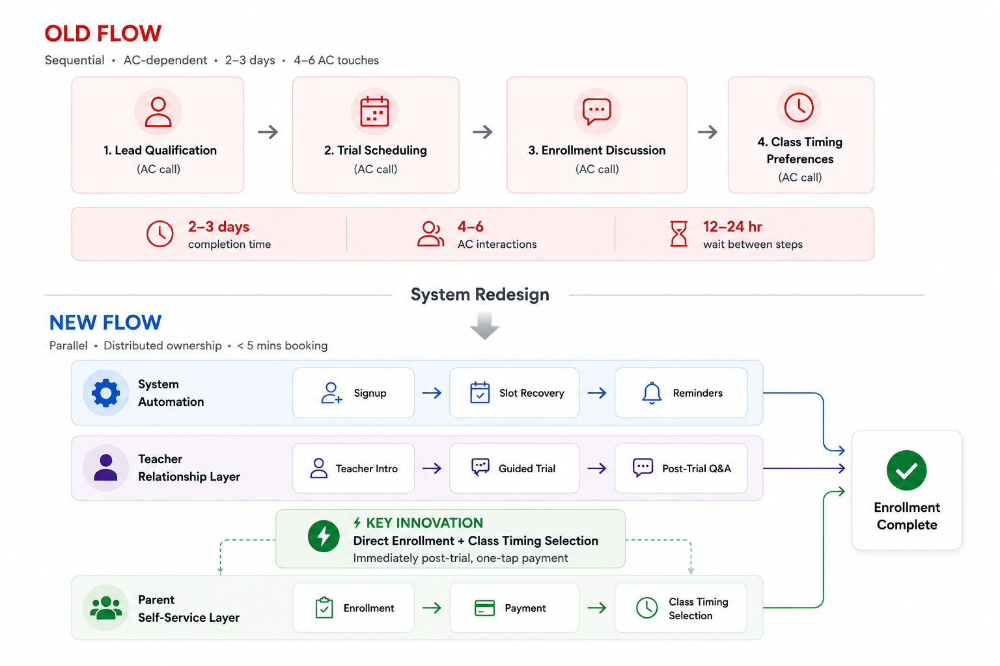
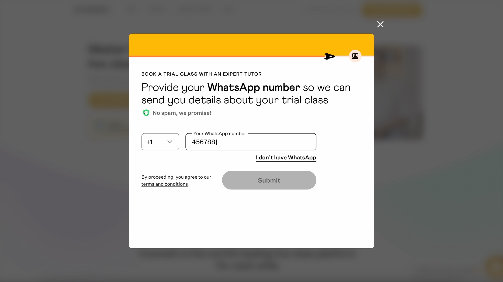
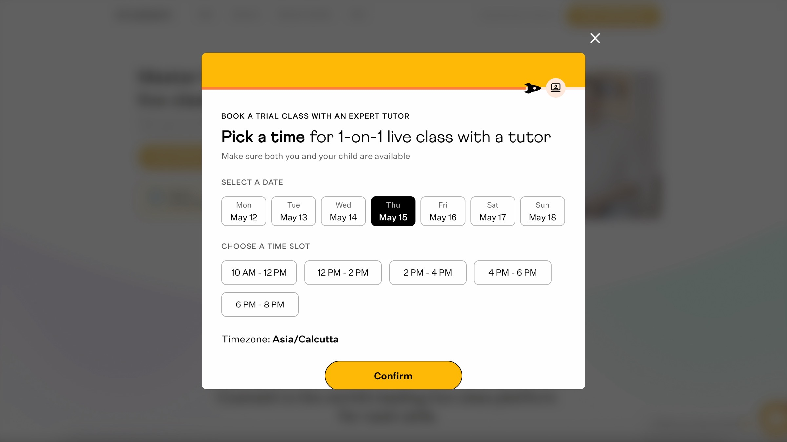
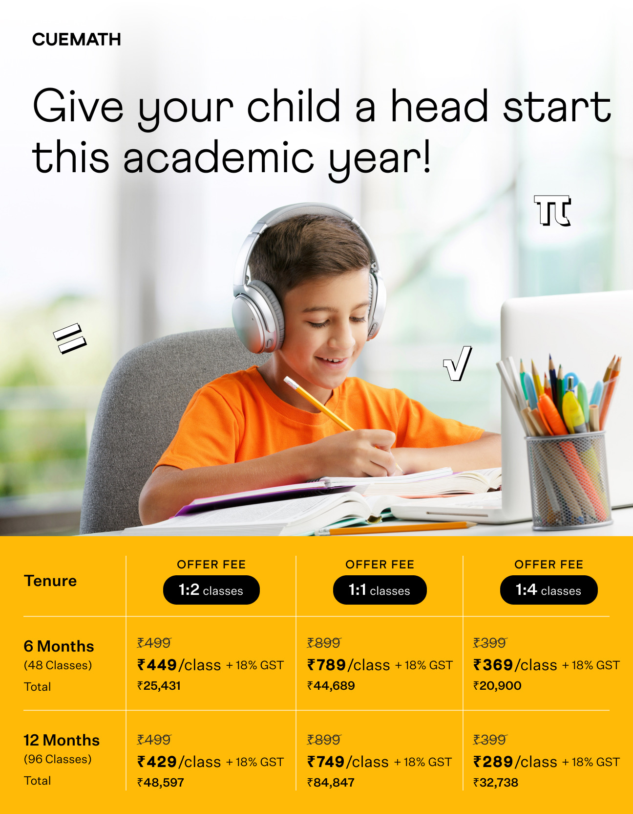
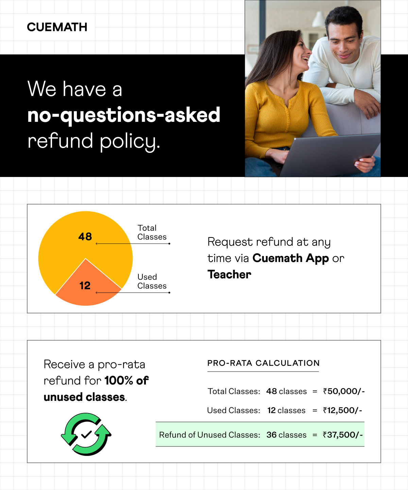
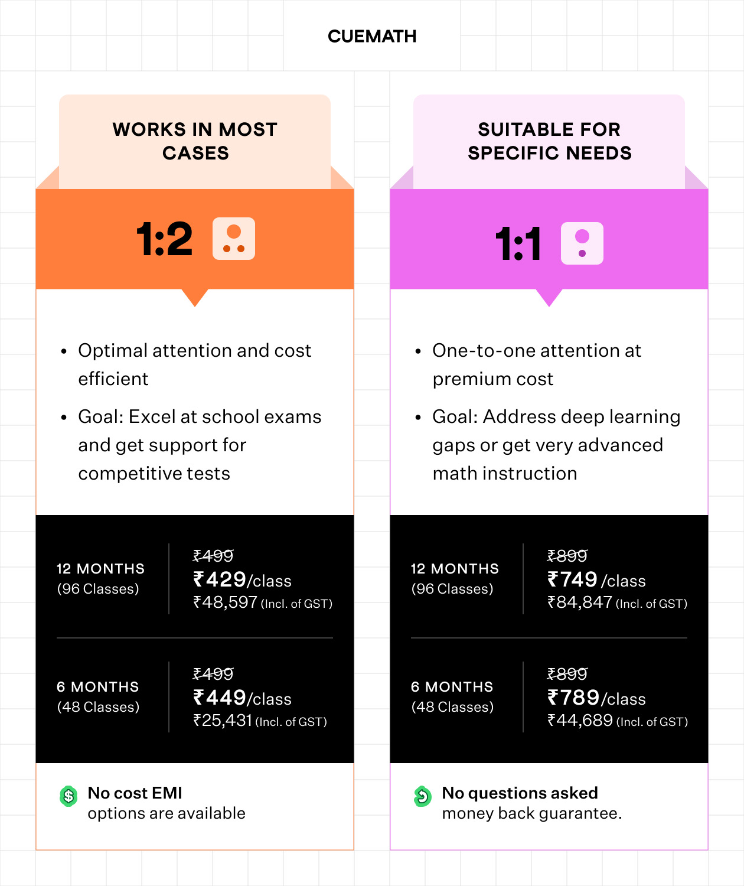
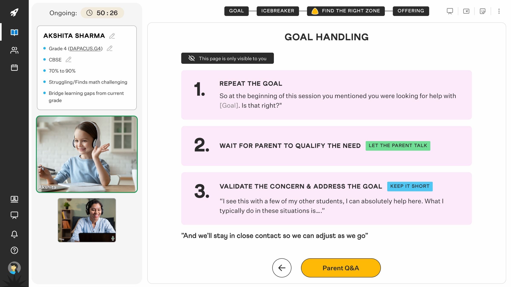

Cuemath's trial funnel ran entirely through Academic Counselors (ACs) — every step waited on a callback, and parents' interest cooled before they reached a paid plan. I redesigned it to run without that bottleneck: parents self-serve through sign-up and booking, teachers own the trust moments, and the system handles the routine — cutting AC work 70% while conversion held.
−70%
AC interventions dropped per parent journey.
+50%
More qualified leads booked a trial.
+9.6%
More trial-takers enrolled into a paid plan.

A parent's interest in Cuemath had a shelf life — it peaked at sign-up and faded with every wait that followed. But the funnel leaned on an AC at every step: qualification, booking, follow-up, enrollment. The full journey dragged across 2–3 days, and the data showed the cost — 40% of qualified leads didn't book within 24 hours, and 35% of trial-takers didn't enroll within three days, both stuck waiting on a callback.
And it wasn't the team's fault. Every parent was one of dozens an AC juggled that day, and on Cuemath's thin margins, hiring more to move faster wasn't viable. The funnel wasn't failing because the team was — the process put them in too many places at once.
I owned the trial funnel end-to-end — from a parent's first sign-up to their paid enrollment, tied directly to business targets.
A parent signs up and books a trial slot in minutes, entirely over WhatsApp. Their assigned teacher reaches out the day before, runs the trial, and the moment it ends, the parent enrolls right there on their device — no callback, no queue, no AC in the loop.

The system runs reminders and routing underneath — ACs step in only for exceptions.
Open in Figma →The brief was direct: cut AC intervention by 70% while holding lead-to-enrollment conversion. If routine touchpoints — scheduling, reminders, enrollment — could be automated or handed to parents, ACs could focus on exceptions: special needs, payment issues.
My first hypothesis was big: have tutors handle everything from the moment they were assigned to a parent — pre-trial messaging, the class itself, post-trial enrollment, even onboarding. Parents already trusted tutors more than ACs, so tutor-as-everything seemed to follow. Testing across 22 trial classes proved it failed: pitching mid-session stretched teachers too thin, lesson quality fell, parents sensed the artifice. The shift: tutors are educators, not the operational spine. Keep them at the trust moments; distribute everything else to system and parent.
So we redrew the funnel around one question — who should own each part of the work? The system took the routine: scheduling, reminders, checkout. Teachers took the trust moments: the pre-trial intro and the class itself. Parents took the decision. ACs stepped in only for exceptions — special needs, payment issues. Here's the shift:

Old: sequential AC-dependent steps with 12–24h waits between each. New: parallel work across system automation, teacher relationships, and parent self-service. ACs intervene only for exceptions.
Decision 1 — WhatsApp as the spine, with automated recovery
WhatsApp was set by the brief — most teacher-parent conversation already lived there, not in our app, so the spec made it the channel. The design problem was making it carry the whole funnel. Every critical step (verification, slot confirmation, teacher intro, reminders, post-trial enrollment) ran on WhatsApp, with SMS and email as fallbacks so no parent fell through.
One automation rode on top: a 5-minute auto-message for parents who started but didn't book — "Do you need help choosing a time?". Small, well-timed, capturing intent before it cooled.

WhatsApp verification confirms the parent and sets up the channel.

Slot selection with teacher names visible. A 5-min auto-reminder fires if abandoned.
After the trial, teachers shared branded WhatsApp messages: pricing, class formats, refund policy. Post-trial follow-up became teacher-led — no AC required.

Pricing — monthly cost with taxes, no hidden fees.

Refund policy — clear exit terms.

1:1 solo vs 1:2 pair — format comparison.
Decision 2 — Teacher as trust anchor, before and during the trial
Instead of an AC confirmation, parents got a personal WhatsApp message from their assigned teacher 24 hours before the trial — name, credentials, sometimes a short video. Rapport began 24 hours early, not after the session ended.
During the trial itself, teachers had a structured reference script — but used it only when parents asked questions. The parent pulls; the teacher doesn't push. Teachers could reference class formats (1:1, 1:2, 1:4) naturally, never as a pitch.
In rollout, 89% of teachers sent the pre-trial WhatsApp intro — pre-session rapport became the norm, not the exception.

Teacher side — reference script: repeat the goal, let parent talk, validate and explain.
Parent side — clean conversation. Parents never see the script.
Decision 3 — Direct enrollment immediately after the trial, with teacher present
The moment the session ended, parents saw an enrollment interface on their device — not a form. Three plan options, pricing visible, one-tap payment. Captures the decision while they're still in the moment, instead of days later. No AC call. If they had questions, the teacher was still present.
A secondary win we didn't design for: with no AC in the loop, the ad-hoc discounts (10–25%) ACs used to offer when they sensed a lead slipping disappeared too — parents paid the standard price, and revenue per enrollment held firm.
AC intervention
−70%
reduction in AC touchpoints while maintaining lead-to-enrollment conversion — the primary objective of the brief.
Lead → Trial
+50%
Trial booking collapsed from 48–72h (AC callback) to under 5 min (WhatsApp slot picker). 78% completed slot booking within 24h vs. ~40% before.
Trial → Paid
+9.6%
Parents enrolled in the moment with the teacher present, instead of waiting days for an AC callback.
All three held in the weeks after launch, and the team absorbed rising trial volume without adding ACs. What I didn't get to measure was the longer arc — whether parents who self-served, without an AC's nudge, stayed enrolled as long as the old high-touch funnel kept them. If I ran it again, that's the first thing I'd instrument.
The shift was distribution, not optimization
The breakthrough wasn't making any one role faster — it was distributing the work so no single role broke under the next. Optimization squeezes the bottleneck; distribution removes it. That's the lens I'd carry into any "do more with less" brief.
Validate assumptions before you invest five weeks in design
I spent five weeks building the teacher-led hypothesis before testing it — one honest 30-minute conversation in week one would have killed it on the spot. I lost weeks executing something a quick check would have caught. My rule now: any hypothesis that touches live-session behavior gets validated in week one, before any design.
The constraint became my filter: build trust, capture intent, or cut it
The 70% AC reduction mandate forced clarity: every step in the flow had to either build trust or capture intent. If it did neither, it was friction — cut it. That forced me to stop designing features and start designing a system. I'd take this lens to any optimization brief — translate the constraint into a design question, not a feature list.